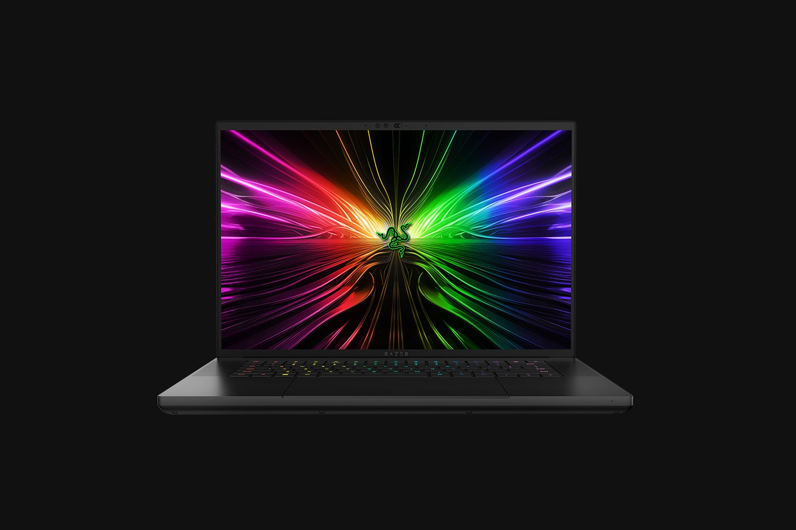

Razor laptop 16
The Razer Blade 16 is an advanced and versatile laptop designed for gaming and professional use. It boasts a 16-inch Full HD (1920 x 1080) display with a thin bezel design for an immersive visual experience. Under the hood, it is powered by an Intel Core i7 processor for swift multitasking capabilities. The laptop’s graphical prowess comes from its NVIDIA GeForce RTX graphics card, ensuring smooth rendering of complex visuals and high frame rates. Additionally, it offers up to 32GB DDR4 memory for efficient multitasking and large data processing.

ASUS ZenBook 13 UM325UA-DS71 - 13.3" - Ryzen 7 5700U - 8 GB RAM - 512 GB SSD
ASUS ZenBook 13 UM325UA-DS71 - 13.3” - Ryzen 7 5700U - 8 GB RAM - 512 GB SSD: A powerful and portable laptop featuring a Ryzen 7 5700U processor, 8 GB of RAM, and a fast 512 GB SSD, perfect for productivity on the go.
Apple MacBook Air M3
The Apple MacBook Air M3 is an advanced and versatile laptop that boasts Apple’s latest M1 chip, providing users with remarkable processing power and efficiency. This device offers a thin and lightweight design, making it an excellent choice for those who require portability without compromising performance. Furthermore, the MacBook Air M3 delivers impressive battery life, enabling users to work or study for extended periods without needing to recharge frequently. Additionally, the laptop’s integrated graphics capabilities offer enhanced visual experiences for multimedia tasks and gaming.The Apple MacBook Air M3 is an advanced and versatile laptop that boasts Apple’s latest M1 chip, providing users with remarkable processing power and efficiency. This device offers a thin and lightweight design, making it an excellent choice for those who require portability without compromising performance. Furthermore, the MacBook Air M3 delivers impressive battery life, enabling users to work or study for extended periods without needing to recharge frequently. Additionally, the laptop’s integrated graphics capabilities offer enhanced visual experiences for multimedia tasks and gaming.